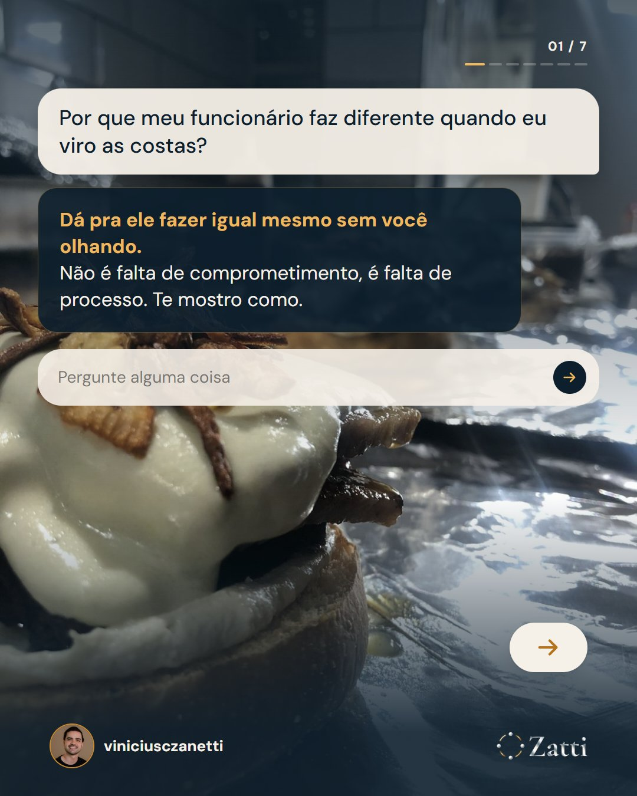

Por que o funcionário faz diferente quando o dono vira as costas
Não é falta de comprometimento. Sem processo escrito, cada um preenche as lacunas do próprio jeito. Veja como o POP e o checklist fazem o restaurante funcionar igual com ou sem o dono.
Publicado em 16/11/2026
O dono mostra no primeiro dia como monta o lanche, explica uma vez como fecha o caixa e segue a vida. Semanas depois, o hambúrguer muda conforme quem está na chapa, o caixa fecha com diferença e a limpeza depende do humor do turno. Quando ele está na loja, tudo sai certo. Quando vira as costas, cada um faz de um jeito.
Para o consultor Vinícius Zanetti, que tratou do tema num carrossel publicado no Instagram, a explicação não está na equipe. Está na falta de processo escrito.

"Não é falta de comprometimento, é falta de processo."Vinícius Zanetti, no carrossel sobre o funcionário que faz diferente
Por que o funcionário não faz do jeito que eu ensinei?
Porque o que foi ensinado só falando depende da memória de cada um. Do que o dono explicou no primeiro dia, sobra o que cada funcionário lembrou daquela explicação. O resto ele completa com o próprio jeito, e isso não é má vontade.
"Ninguém é máquina. Sem processo escrito, cada funcionário preenche as lacunas do jeito dele."Vinícius Zanetti, no carrossel sobre o funcionário que faz diferente
O efeito aparece no cliente e no custo. O lanche que muda de quem monta para quem monta tira a consistência que fideliza. E a porção que sai maior em um turno do que em outro sobe o CMV sem ninguém perceber, como mostra a matéria sobre padronização do porcionamento.
Cobrar mais da equipe resolve?
Não, enquanto o padrão não estiver escrito. Sem uma referência clara, a cobrança vira discussão de opinião: o dono acha que foi feito errado, o funcionário acha que fez como aprendeu. Os dois podem estar falando de coisas diferentes.
"Cobrar mais só gera tensão quando ninguém sabe exatamente qual é o padrão. Com o padrão escrito, a conversa fica simples: fez como está no POP ou não fez."Vinícius Zanetti, no carrossel sobre o funcionário que faz diferente
O livro Restaurante no Controle vai na mesma linha. No capítulo Garante, quando um processo não é seguido, a orientação é entender a causa antes de punir: se o problema é de compreensão, a resposta é treinar de novo; se é de ferramenta, o processo precisa ser ajustado.
"Quando uma inconsistência é identificada, a resposta não é punição, é diagnóstico."Vinícius Zanetti, no livro Restaurante no Controle, no capítulo Garante
O que é POP em restaurante?
POP é a sigla de Procedimento Operacional Padrão: o passo a passo escrito de cada função, do jeito que ela deve ser feita sempre. Na regra de boas práticas da Anvisa para serviços de alimentação, a RDC 216 de 2004, o termo aparece como Procedimento Operacional Padronizado, definido como o "procedimento escrito de forma objetiva que estabelece instruções seqüenciais para a realização de operações rotineiras e específicas na manipulação de alimentos".
A mesma resolução já exige POPs escritos para quatro assuntos de higiene: higienização de instalações, equipamentos e móveis; controle de vetores e pragas; higienização do reservatório de água; e higiene e saúde dos manipuladores. Pela norma, esses documentos precisam trazer as instruções em sequência, a frequência de execução e o nome, o cargo ou a função de quem executa, e ficar acessíveis aos funcionários.
O que o carrossel propõe é levar a mesma lógica para o resto da operação: a montagem do lanche, o fechamento do caixa, a abertura da loja. Não por exigência da vigilância sanitária, mas porque é o que faz a loja funcionar igual em todos os turnos.
Qual a diferença entre POP e checklist?
Os dois trabalham juntos, mas têm papéis diferentes. O POP diz como fazer. O checklist garante que foi feito.
| POP | Checklist | |
|---|---|---|
| Para que serve | Ensinar o jeito certo de cada função | Confirmar que cada etapa foi cumprida |
| Quando se usa | No treinamento e na dúvida | Todo dia, em cada abertura, fechamento ou tarefa |
| O que mostra | Passo a passo, medida, frequência e responsável | Quem fez, a que horas e, quando pede foto, como ficou |
Na legenda do carrossel, Vinícius explica o ganho do checklist no celular: com check e foto em cada item, o dono vê quem fez e a que horas, sem precisar estar na loja. O livro cita os checklists de abertura e fechamento, de controle de temperaturas e de organização do estoque como ferramentas que reduzem erros e aumentam a eficiência.
Como fazer um POP para restaurante?
POP bom é curto, prático e escrito com quem executa a função. Para começar, o caminho é este:
- Escolha uma função. Comece pela que mais muda de pessoa para pessoa ou pela que mais custa quando sai errada.
- Acompanhe quem faz melhor. Anote cada passo na ordem, com as medidas: gramas, tempo, temperatura, quantidade.
- Escreva em frases curtas. Um passo por linha, com foto de como deve ficar quando ajudar.
- Diga quem faz e com que frequência. Função, turno e horário. É o que a própria norma da Anvisa pede nos POPs de higiene.
- Treine na prática. O livro descreve o treinamento em três tempos: o funcionário vê o processo sendo feito, faz com supervisão e só então assume sozinho.
- Transforme em checklist. Os passos que não podem ser esquecidos viram itens para marcar todo dia.
O livro reforça um ponto que costuma ser esquecido: explicar o porquê. Quando o cozinheiro entende que a ficha técnica protege a margem e, com ela, o próprio emprego, passa a tratar o padrão de outro jeito.
"Processo que não é ensinado não é seguido."Vinícius Zanetti, no livro Restaurante no Controle, no capítulo Garante
O que o dono de hamburgueria e pizzaria faz com isso
O carrossel termina com uma lista de cinco funções para escrever primeiro: montagem do lanche, fechamento do caixa, limpeza da chapa, abertura da loja e recebimento de mercadoria. Na pizzaria, a montagem do lanche vira a abertura da massa e a montagem da pizza, e a limpeza da chapa vira a do forno.
Não precisa escrever tudo de uma vez. Um POP por semana, começando pela montagem do produto que mais vende, já muda a rotina em poucos meses. O resultado, nas palavras do próprio carrossel, é o restaurante funcionar igual com o dono ou sem ele: o funcionário novo aprende pelo POP, o checklist mostra o que foi feito e o dono deixa de ser o único manual da loja.
Para começar hoje: escolha a função que mais varia na sua loja, acompanhe quem faz melhor e escreva o passo a passo em uma página. Esse é o seu primeiro POP.
Perguntas frequentes
O que é POP em restaurante?
É o Procedimento Operacional Padrão: o passo a passo escrito de uma função, com medidas, frequência e responsável, para que ela seja feita sempre do mesmo jeito, por qualquer pessoa da equipe.
POP é obrigatório em restaurante?
A RDC 216/2004 da Anvisa exige POPs para quatro assuntos de higiene: instalações, equipamentos e móveis; controle de pragas; reservatório de água; e higiene e saúde dos manipuladores. POPs de montagem e caixa são de gestão, não exigência sanitária.
Qual a diferença entre POP e checklist?
O POP ensina como fazer a função. O checklist confirma, todo dia, que cada etapa foi cumprida, por quem e a que horas.
Por que o funcionário faz diferente do que eu ensinei?
Porque explicação só falada depende da memória. Sem processo escrito, cada funcionário completa as lacunas do próprio jeito. A saída é documentar o padrão, não cobrar mais.
Fontes
- Instagram de Vinícius Zanetti: carrossel sobre o funcionário que faz diferente quando o dono vira as costas (outubro de 2026).
- Anvisa, Resolução RDC nº 216, de 15 de setembro de 2004, Regulamento Técnico de Boas Práticas para Serviços de Alimentação (itens 2.18 e 4.11), no portal Saúde Legis do Ministério da Saúde.
- Vinícius Zanetti, Restaurante no Controle: capítulos Estrutura (checklists operacionais) e Garante (treinamento e acompanhamento da execução).